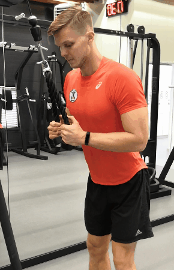
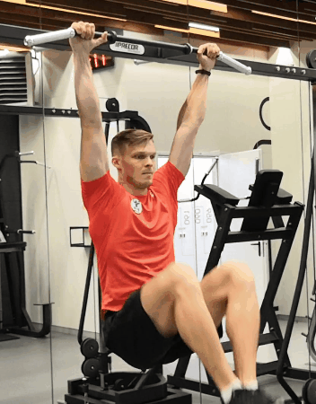
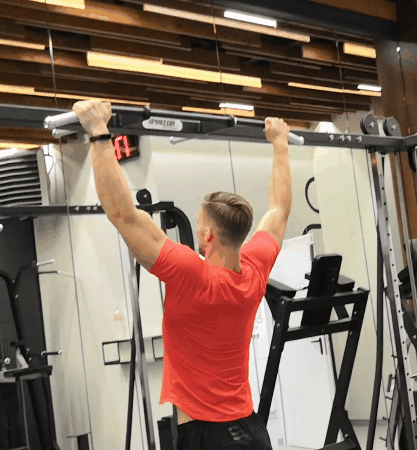
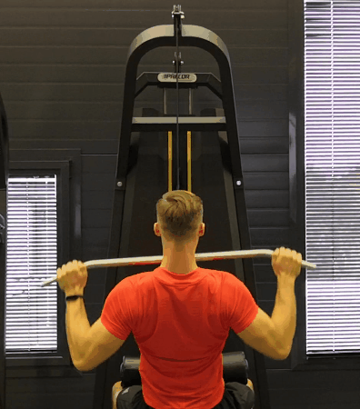
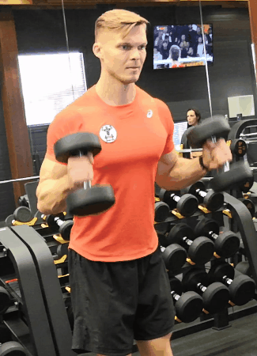
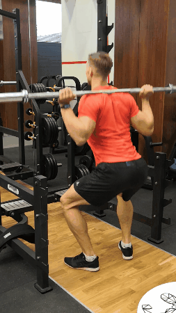
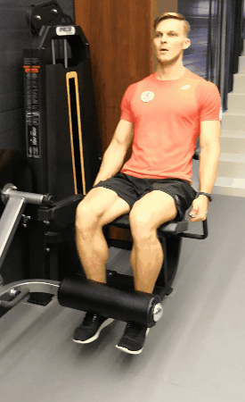
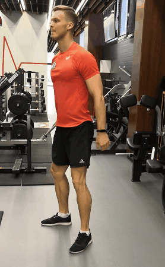

1) Разминка пустым грифом 20раз

2) Жим лёжа 4серии по 12раз рабочим весом
3) Жим штанги (скамья под 45°) 3 по 12 раз

4) Жим гантелей (скамья под 45°) 4 по 15 раз

5) Разводка гантелей (скамья под 45°) 3 по 12раз

6)Французкий жим гантелями лёжа на полу 15раз+жим гантелей узким хватом(сведя гантели) 20раз 4серии

Разгибание рук на верхнем блоке с канатом(в кроссовере) 4серии (20раз+15раз+12раз+максимум)
Подъем коленей к груди в висе на перекладине 4 по 20раз

1)Подтягивания 4серии
2)Тяга верхнего блока 4серии по 12 раз
3)Тяга горизонтального блока к груди 4 серии по 15 раз

4)Пуловер в кроссовере 5 серий по 20 раз

5)Поочередное сгибание рук с гантелями 4 по 12раз на каждую руку

6)Сгибание рук сидя на скамье 3 по 15раз

7)Молотки на бицепс 4 по 15 раз

8)Сгибание рук со штангой стоя 3 по 20раз

9)Подъем коленей к груди в висе на перекладине 4 по 20раз
10)Растяжка
1)Приседания с пустым грифом 20раз
2)Приседания со штангой 5 по 12 раз рабочим весом
3)Зашагивания с гантелями 2 серии по 12 раз на ногу

4)Разгибания ног в тренажёре 4 по 15раз
5)Сгибания ног в тренажёре 3 по 12 раз

6)Приседания без веса до 90° 3 серии по 30раз (быстрые)
7)Отведение рук в стороны с гантелями 4 по 20
8)Жим гантелей (на скамье под 90°) 4серии по 12 раз
9)Подъемы рук с гантелями 3*100(перед собой, в стороны, в наклоне)
10)Подъем прямых ног к хвату в висе на перекладине 4 по 15раз